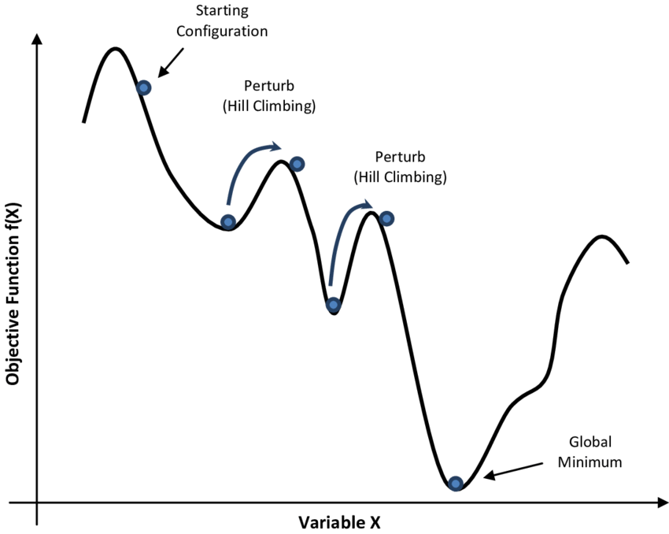

Simulated Annealing Method and "BEC optimization"

Optimization is a key problem in applied mathematics. In non-convex cases, many strategies have been proprosed
to avoid local minima. One family is called Swarm Intelligence Algorithm (SIA), and Simulated Annealing (SA) Method is a special
case for SIA. SA utilzes the idea of Boltzmann distribution, detailed balance, so it is highly attracting to
physicists. Especially, SA has been widely used to simulate the ensemble of a system with the process of Markov Chain Monte Carlo (MCMC).
New Ideas (Highlight: Ongoing works!)
Simulated Annealing is a robust method for optimization. The reason is that at hight temperature, "particles" jump violently so that
they could hopefully escape local minima; while at low temperature, "particles" approach the global minima with increasing accuracies.
The physical interpretation corresponds to distinguishable particles so the "particles" obey the Maxwell-Boltzmann distribution.
We naturally wonder what will happen if we change the distribution to be "Dirac-Fermi" or "Bose-Einstein" type. We are more interested
in the "Bose-Einstein" type, where there exists so-called Bose-Einstein Condensation(BEC) under critical temperature. The BEC phenomenon at low temperature in physics
implies large convergent rate in Mathematics. While at high temperature, the asymptotic behavior of "bosons" will be the same as "distinguishable
particles", which means these "bosons" can also escape local minima at high temperature. I believe this physics-motivated idea will have a role in non-convex optimization.
For now, I have played with some toy models and the results are very interesting. If you are interested in this idea, welcome to discuss with me!